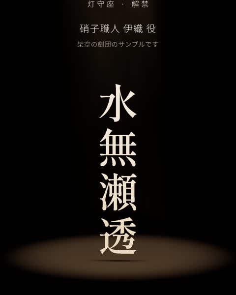
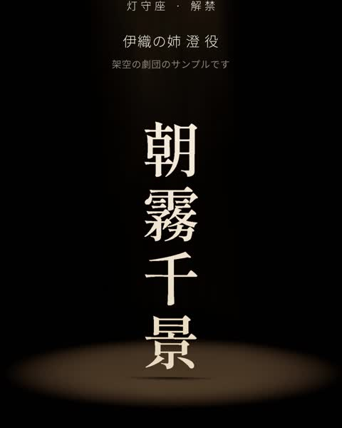
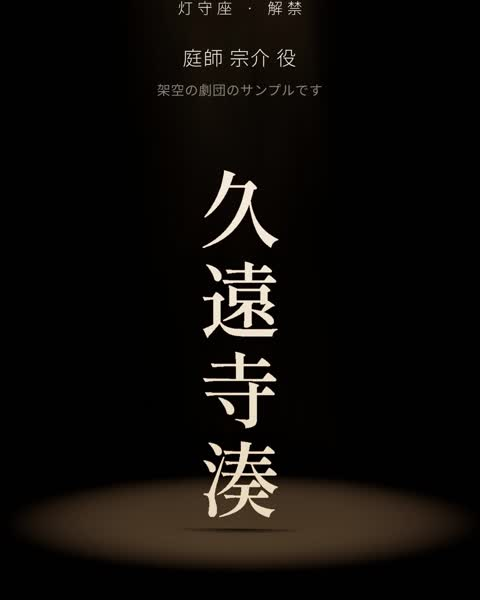
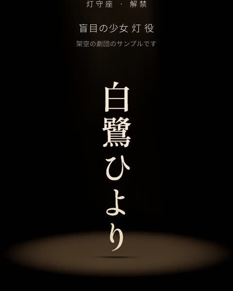
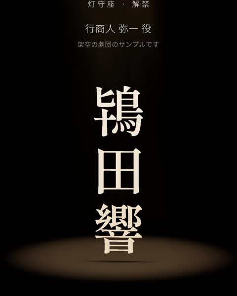
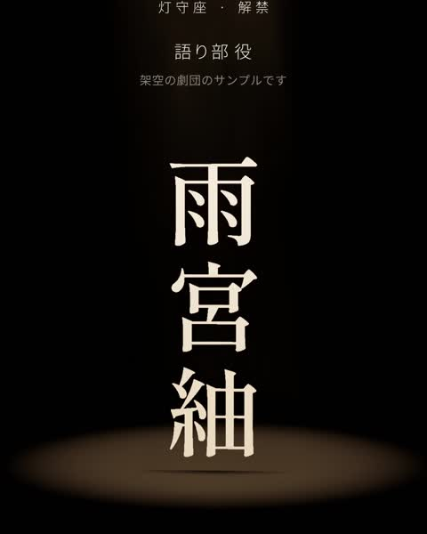

STORY
割れたものほど、光をよく通す
海辺の町の硝子工房。父の残した「割れない硝子」の設計図をめぐって、姉弟と庭師、ひとりの少女がひと冬を過ごす。灯守座が3年ぶりに贈る、光と影の会話劇。
CAST
出演






SCHEDULE
日程
| 日付 | 開演 | 残席 |
|---|---|---|
| 12.11金 | 19:00 | あり |
| 12.12土 | 13:00 ／ 18:00 | 残りわずか |
| 12.13日 | 13:00 | 残りわずか |
| 12.16水 | 19:00 | あり |
| 12.17木 | 14:00 ／ 19:00 | あり |
| 12.18金 | 19:00 | あり |
| 12.19土 | 13:00 | 残りわずか |
| 12.20日 | 13:00 | あり（千秋楽） |
SEATS
席種
S席
6,800円
1〜8列。舞台の床の光まで見える距離
A席
5,200円
9列から後ろ。硝子の林の奥行きがいちばんきれいに見える
学生
3,000円
当日、受付で学生証をご提示ください